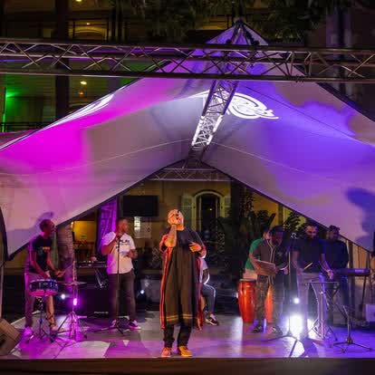

Capter un séminaire ou une convention en vidéo à La Réunion
Un séminaire, une convention ou une conférence, c'est parfois des mois de préparation pour des prises de parole qui n'existent que le temps d'une matinée. La captation vidéo les transforme en contenu réutilisable : un replay pour ceux qui n'étaient pas là, des extraits pour communiquer, et une diffusion en direct pour les équipes restées sur un autre site. Voici comment ça marche et ce qu'il faut prévoir.
Captation, aftermovie : ce n'est pas la même chose
L'aftermovie résume l'ambiance en quelques minutes rythmées. La captation, elle, enregistre le contenu : l'intégralité des prises de parole, des présentations, de la table ronde — proprement filmées et sonorisées, pour être revues. Les deux sont complémentaires : l'un fait revivre l'émotion, l'autre conserve l'information.

Pourquoi le multicaméra change tout
Filmer une conférence avec une seule caméra fixe donne une vidéo plate que personne ne regarde. Une bonne captation croise plusieurs points de vue : un plan large sur l'orateur, un plan serré sur son visage, l'écran de présentation intégré en incrustation, et parfois la réaction de la salle. C'est ce montage entre les angles qui garde le spectateur accroché — comme à la télévision.
La diffusion en direct (live) : pour qui ?
Beaucoup d'entreprises réunionnaises ont des équipes réparties sur plusieurs sites, ou des collègues en métropole. La diffusion en direct permet à ceux qui ne peuvent pas se déplacer de suivre la plénière en temps réel, sur un lien privé. C'est particulièrement utile pour :
- Les conventions qui réunissent plusieurs agences de l'île ;
- Les groupes avec une maison mère en métropole ;
- Les kick-off où l'on veut que tout le monde entende le même message en même temps ;
- Les annonces importantes à diffuser largement en interne.
Ce qu'il faut prévoir en amont
Une captation réussie se prépare avec l'organisateur : le déroulé précis (pour savoir quoi filmer et quand), le branchement du son sur la sonorisation de la salle (indispensable pour un son propre), l'emplacement des caméras sans gêner le public, et — pour le live — une connexion internet fiable sur place. C'est exactement là que notre modèle fait la différence : comme nous organisons aussi le séminaire, nos caméras connaissent le programme avant qu'il ne commence.
Après l'événement : replay et extraits
Une fois capté, ton contenu se décline : la vidéo intégrale en replay privé, des extraits courts par intervention (parfaits pour LinkedIn), et les meilleurs moments pour ton film corporate. Un seul tournage, plusieurs usages toute l'année.
Un séminaire ou une convention à capter à La Réunion ? Parlons-en au 0693 81 78 82 — devis sous 48 h, et toutes nos réalisations sont sur productionvideo974.re.